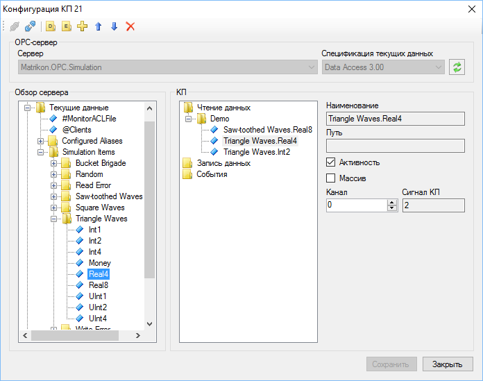
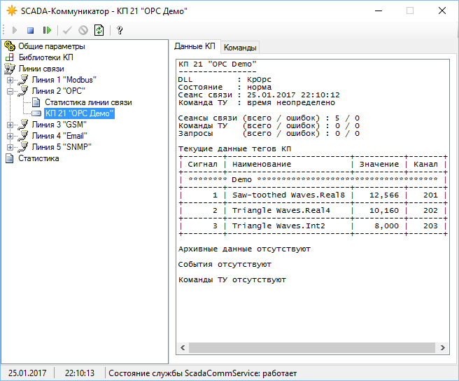

на странице Опрос КП или из контекстного меню по правому щелчку на элементе дерева, который соответствует КП.
на странице Опрос КП или из контекстного меню по правому щелчку на элементе дерева, который соответствует КП.Стандарт OPC обеспечивает универсальный способ подключения устройств различных производителей к SCADA-системе. Программный комплекс Rapid SCADA поддерживает следующие спецификации OPC:
Реализация OPC комплексом Rapid SCADA выполнена в виде библиотеки (драйвера) KpOpc.dll в составе программы Коммуникатор. Особенностям настройки программы Коммуникатор для взаимодействия по стандарту OPC, преимущественно, посвящена данная статья.
Общая последовательность настройки:
Детали выполнения пунктов 2, 4 и 5 содержатся в разделе Настройка комплекса. Рекомендуется ознакомиться с примером, который содержится в демо-конфигурации Rapid SCADA, устанавливаемой по умолчанию. Примером устройства является КП 21 "OPC Демо", данные которого отображаются табличным представлением OpcDemo.tbl. Для полноценной работы примера нужно скачать и установить программу MatrikonOPC Explorer, которая имитирует работу OPC-сервера.
В Коммуникаторе необходимо создать отдельную линию связи для каждого используемого OPC-сервера. Такой подход наиболее эффективен, потому что позволяет взаимодействовать с OPC серверами параллельно. Затем добавьте КП на линии связи. Это можно быстро сделать с помощью функции импорта в Коммуникаторе, не забывая о том, что программа Сервер при импорте должна быть запущена. В Коммуникаторе для линий связи с OPC серверами установите тип канала связи Не задан.
Привязка параметров КП к тегам OPC-сервера осуществляется с помощью специальной формы конфигурации КП (рис. 1), которая вызывается кнопкой на странице Опрос КП или из контекстного меню по правому щелчку на элементе дерева, который соответствует КП.

Рис. 1. Выбор OPC-тегов
Для использования доступны OPC-серверы, установленные на том же компьютере, на котором работает Коммуникатор. Если необходимо подключение к OPC-серверу, расположенному на другом компьютере сети, то необходимо установить экземпляр Коммуникатора на том компьютере и корректно настроить параметры его связи с Сервером.
Чтобы полученные от OPC-сервера значения были записаны во входные каналы Rapid SCADA, требуется привязка тегов КП к входным каналам базы конфигурации. Эта привязка может выполняться двумя способами, перечисленными ниже. Выбор способа определяется в каждом конкретном случае, исходя из удобства настройки.
После того, как настройка конфигурации КП завершена, необходимо убедиться, что служба Сервера запущена, запустить или перезапустить службу Коммуникатора. Через несколько секунд работы Коммуникатора, если настройка системы выполнена правильно, на странице Данные КП должны появиться значения, полученные от OPC-сервера (рис. 2). Эти значения также можно увидеть в браузере с помощью веб-приложения Вебстанция.

Рис. 2. Значения OPC-тегов
Известная проблема при работе с OPC: не удаётся получить данные от OPC-сервера, при этом в свойствах КП требуемый OPC-сервер доступен.
Вероятная причина проблемы заключается в том, что Коммуникатор работает как служба Windows от пользователя system, а OPC-сервер не поддерживает подключение к нему от имени данного пользователя.
Решение 1. В параметрах DCOM для OPC-сервера необходимо установить запуск от имени конкретного пользователя, который является администратором компьютера. Чтобы открыть настройки DCOM (рис. 3), скопируйте следующий путь в проводник Панель управления\Система и безопасность\Администрирование\Службы компонентов или просто запустите comexp.msc

Рис. 3. Конфигурация DCOM
Решение 2. Установить учётную запись пользователя, которая используется для работы службы Коммуникатора. Откройте настройки служб, скопировав в проводник Панель управления\Система и безопасность\Администрирование\Управление компьютером\Службы или запустив services.msc. Найдите службу ScadaCommService и откройте её свойства. Введите имя пользователя и пароль на странице Вход в систему, как показано на рис. 4. Указанный пользователь должен обладать правами администратора компьютера.

Рис. 4. Свойства службы